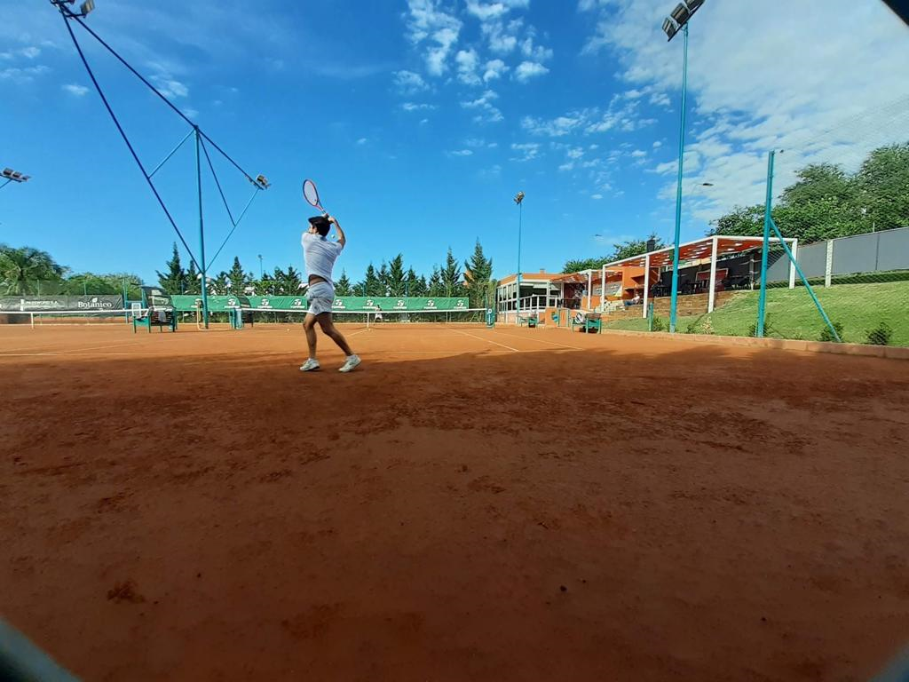
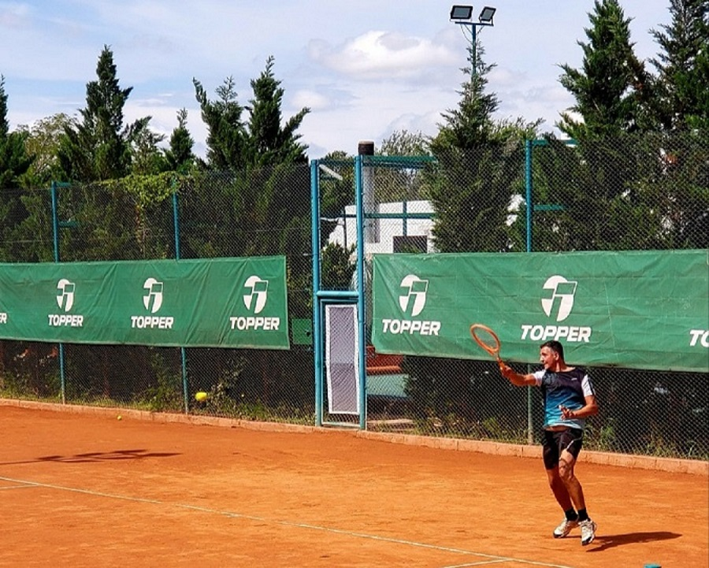

INICIO
Sobre Nosotros
Open Cup nació como una alternativa de los Torneos Amateurs Seniors de Córdoba, pero al día de la fecha es el Torneo de Tenis Amateurs de Córdoba que más jugadores están inscriptos en diferentes categorías que se diferencian por nivel, por otro lado debido a la colaboración de varios participantes del Torneo, Open Cup es el Torneo que más beneficio le otorga a sus jugadores, es por ello que es el más elegido dentro de los Torneos de la Ciudad de Córdoba y alrededores.El formato de los torneos es el siguiente: Tiene una duración aproximada de 1 mes cada Etapa, se dividen en 3 categorías jugando diferentes días y horarios priorizando los fines de semana sujeto a la disponibilidad de cada sede. El día de la final se realiza un Evento único que incluye comida y bebida a los participantes y publico general. Se juegan 11 ETAPAS al año y un Master con los mejores preclasificados de cada categoría.

